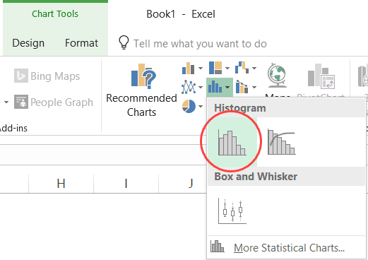

9 Sensitivity Analysis
Today’s Goals:
- Learn how to handle uncertainty when we estimate net benefits
- Practice performing partial sensitivity analysis and Monte Carlo simulations in Excel10
- Develop action plans for final projects
9.1 Overview
In every step of a cost-benefit analysis, we have to make choices and assumptions based on limited information. This includes choices about:
- The discount rate
- What categories to include or exclude
- Estimated effect sizes from published studies
- Monetization strategies
- Standing
We would like to know how sensitive our conclusions are to those assumptions. In other words, if we made different choices, how much would our conclusions change?
This is the focus of the final step of a good CBA: sensitivity analysis. In this chapter, we will discuss two sensitivity analysis methods, (1) partial sensitivity analysis and (2) Monte Carlo simulation.
9.2 Partial Sensitivity Analysis
In a partial sensitivity analysis (also called univariate or one-way sensitivity analysis), you try a range of values for a single variable — holding everything else constant — and see how it affects your conclusions.
Here’s one example from a paper we read on electric buses. The authors plot the range of values they tried for each variable on the x-axis and net present value on the y-axis.
To do a partial sensitivity analysis in Excel, simply create a column of values you’ll try for the variable in question. Then plug in those values into the formulas you used to compute net benefits and record the results in a second column.
9.3 Monte Carlo Simulation
What if you want to vary multiple assumptions at once? Ideally, you could see what happens at every possible combination of parameter values, but that would be infeasible. Once you start varying more than one value, there are just too many combinations!
Monte Carlo simulation tackles this problem by generating a large number of random values and recomputing net benefits for each new draw. Named after the famous Monaco casino (because casinos are just big random number generators that you pay to take your money):

For our purposes, you can draw random numbers in one of two ways: a uniform distribution or a normal distribution.
9.3.1 Uniform Distribution
In a uniform distribution, any value within some range is equally likely.
In Excel, you can draw a uniformly random value between 0 and 1 with the RAND() function.
Exercise: Try it! Type
=RAND()into a cell in an Excel document. What value do you get? Try hitting the F9 key a few times. What happens?
If you want to draw a uniform random value between \(a\) and \(b\), use =RAND()*(b-a)+a
Exercise:
- Draw 100 random values between 3 and 6 in Excel. (Don’t forget about dragging formulas!)
- Create a histogram of your random values. Highlight all 100 values, then select Insert > Chart > Histogram.

- You may notice that your random values keep changing every time you change something on the spreadsheet. To stop this from happening, replace the formulas in those cells with their values by copying the cells, right clicking, and selecting “Values” under “Paste Options”.

9.3.2 Normal Distribution
In a normal distribution, values closer to the mean are more likely than those far away (a bell shape curve, as in the figure above).
In Excel, you can draw normal random values with mean = \(a\) and standard deviation = \(b\) using:
=NORM.INV(RAND(),a,b)
This distribution is useful when you’re incorporating uncertainty estimates from an academic study. Rather than assuming that every value within the 95% confidence interval is equally likely, you should draw from a normal distribution centered around the estimate, with standard deviation equal to the standard error of the estimate.
Exercise: Suppose that you are you making a prediction about the effect of your program based on an academic study. The study estimates that, on average, 300 hundred lives will be saved if you implement your program, but that estimate has a standard error (measure of uncertainty) equal to 200. Draw 100 random normal draws to characterize the uncertainty in that estimate. What is the average value of those draws? What percentage of those draws fall below zero? Plot a histogram too.
Note: To count the number of cells that match a certain criterion, use the
COUNTIF()function.COUNTIF(B1:B100, "<0")counts the number of cells betweenB1andB100that are less than 0. The first argument is a range of cells, and the second argument (the criteria) should always be placed in quotations.
9.3.3 Monte Carlo in Excel
Here are the steps you’ll want to take to construct a Monte Carlo simulation in Excel.
Step 1: Enter the Formula
Step 2: Drag it down

step2
Step 3: Create a column for each variable
step3
Step 4: Recompute net benefits using the values in each row
 **
**
Throughout the chapter, I will use
thisfont to denote Excel commands.↩